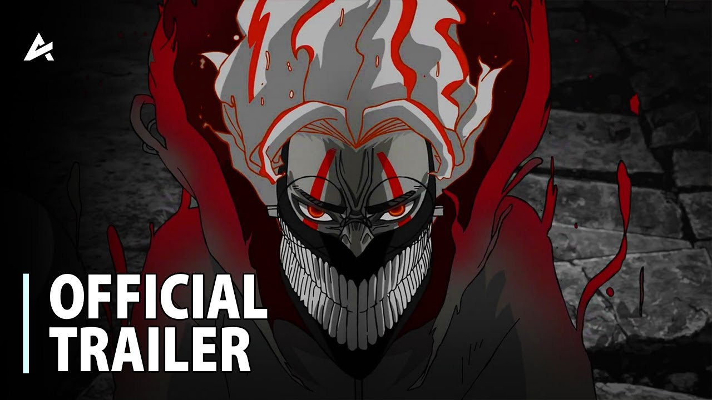
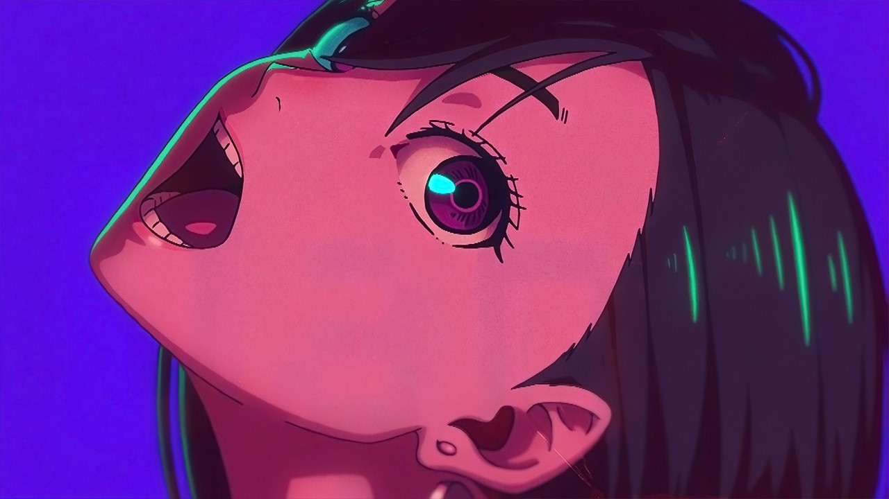
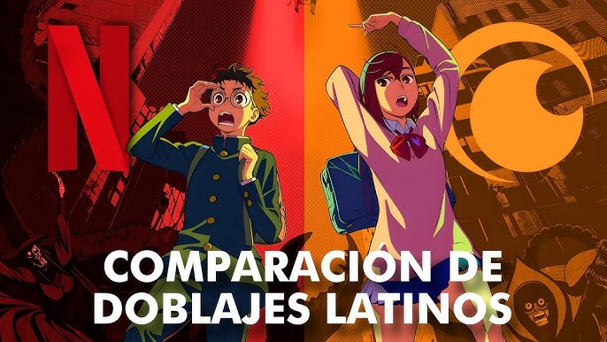

¿De qué trata Dandadan?
La historia sigue a Momo Ayase, una estudiante de secundaria que cree firmemente en lo sobrenatural pero no en los extraterrestres, y a Ken Takakura (apodado "Okarun"), un chico tímido obsesionado con los aliens pero escéptico respecto a fantasmas y espíritus.
Ambos personajes se conocen por casualidad y deciden probar sus creencias visitando lugares que supuestamente están infestados de seres paranormales y extraterrestres.
Lo que parecía ser una simple apuesta se transforma en una experiencia alucinante cuando ambos descubren que tanto los fantasmas como los aliens son reales.
Esto desata una serie de eventos extraños y peligrosos, involucrándolos en enfrentamientos con entidades paranormales, extraterrestres y otros seres inusuales, mientras desarrollan una amistad peculiar y una posible conexión romántica.
 Ver Trailer OficialEstreno de Dandadan en México
El anime de Dandadan se estrenó en México el 4 de octubre de 2024 en dos plataformas: Netflix y Crunchyroll.
Cuenta con 12 capítulos que se estrenan cada sábado.
El anime es una adaptación del manga escrito por Yukinobu Tatsu.
 Ver OpeningComparación de Doblajes Latinos
Dandadan cuenta con dos doblajes, uno por parte de Netflix y otro de su competencia Crunchyroll.
A continuación, dejamos un enlace para que puedas juzgar las diferencias entre ambos doblajes:
 Ver Comparación de Doblaje